Runtime dowodowy dla autonomicznej pracy agentów: zatwierdzone misje, kontrolowane wykonanie, acceptance replay, proof bundle, niezależny verifier i wykrywanie manipulacji.
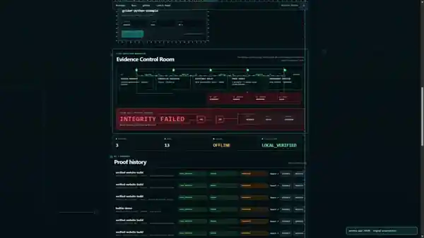
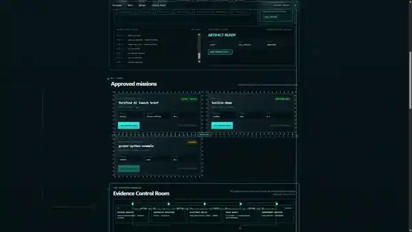
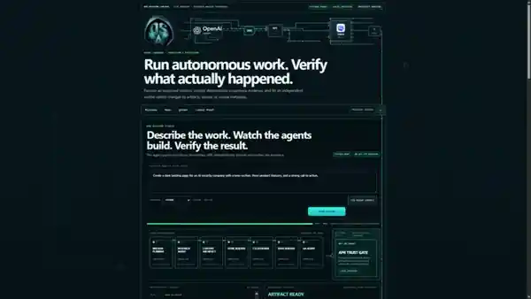
OSATechGPT / SELECTED WORK
To mój plac budowy: cztery systemy, które przeszedłem od pomysłu do działającego interfejsu. Pokazuję prawdziwy materiał — bez fikcyjnych klientów, wyników i metryk.
Runtime dowodowy dla autonomicznej pracy agentów: zatwierdzone misje, kontrolowane wykonanie, acceptance replay, proof bundle, niezależny verifier i wykrywanie manipulacji.



Prywatny control plane do misji, kolejek, workerów, approvals, budżetów, recovery i dowodów wykonania. System działa na własnej infrastrukturze VPS i nie ma publicznego endpointu.
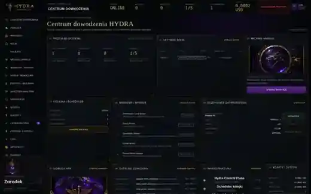
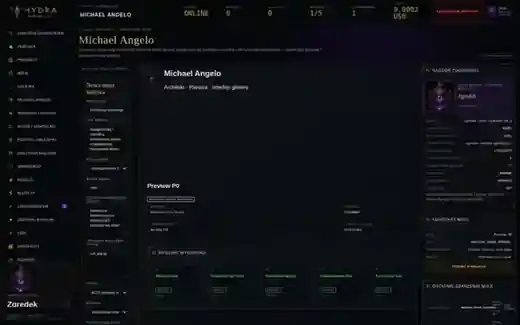
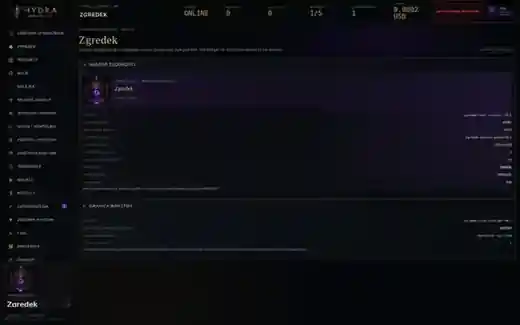
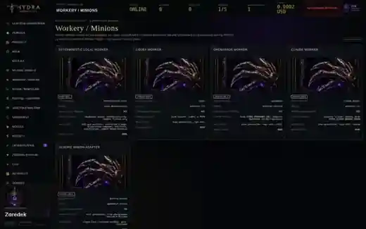
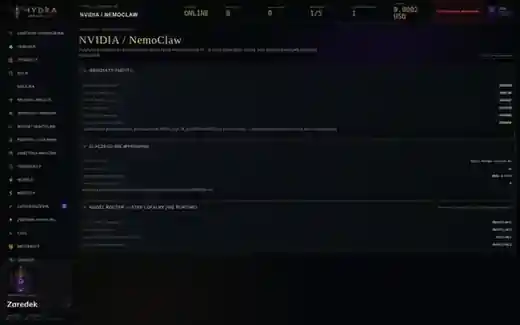
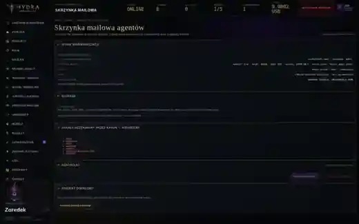
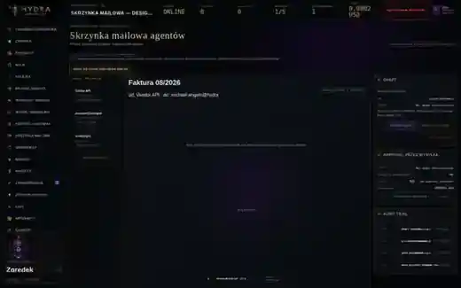
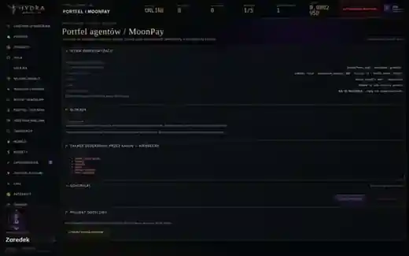
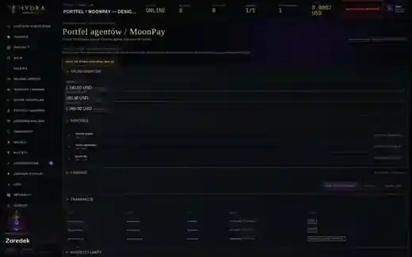
16-bitowa uliczna bijatyka w stylistyce arcade: autorska oprawa, postacie, walka i działające demo webowe.

Durable Mission Runtime z Atelier Live, obserwowalnością agentów, task graphem, proof layerem i pamięcią Obsidian.


NEXT / YOUR PRODUCT
Pokaż mi trudny problem. Rozłożę go na system i powiem wprost, jaki pierwszy etap ma sens.